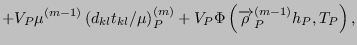
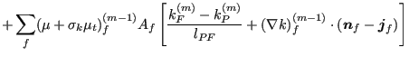
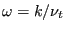
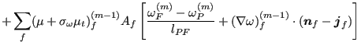
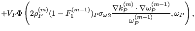

Next: Convergence considerations Up: The Finite Volume Method Previous: Mass conservation equation Contents
Conservation of momentum:
![$\displaystyle = \sum_{f}^{} \mu^T_f A_f \left[ \frac{(v_i)_F ^{(m)} - (v_i)_P ^...
...} + (\nabla v_i)_f ^{(m-1)} \cdot (\boldsymbol{n}_f - \boldsymbol{j}_f) \right]$](img2032.png) |
||
 |
(718) |
Conservation of mass:
| (719) |
Conservation of energy:
![$\displaystyle + \sum_{f}^{} \lambda_f^T A_f \left [ \frac{T_F ^{(m)} - T_P ^{(m...
...}} + (\nabla T)_f ^{(m-1)} \cdot (\boldsymbol{n}_f - \boldsymbol{j}_f) \right ]$](img2040.png) |
||
|  | (720) |
Equation for the turbulent kinetic energy:
|  | ||
| (721) |
Equation for the turbulence frequency :
|  | ||
|  | (722) |